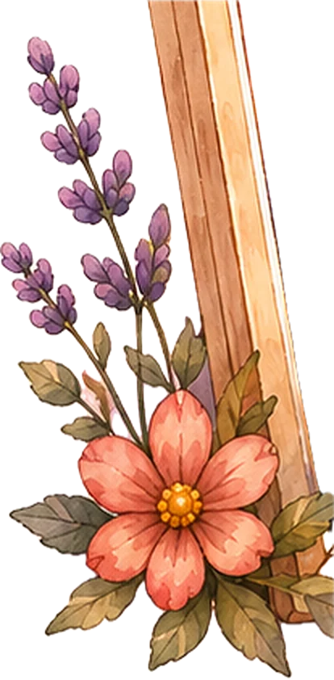
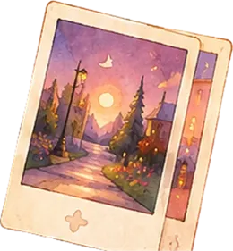

Some feelings only fit in a poem.
Tell Poem Writer what’s on your mind. It writes the poem, paints a cover for it and reads it back to you.
Get Poem Writer
A free AI poem generator on the App Store for iPhone and iPad

Same rain. A different poem for every feeling.
Give Poem Writer a topic, then choose how it should feel. It picks the words, the shape and the title. Try it on this page: the poem, and the page, change with you.
Thirty forms, from three lines to thirty‑nine.
Choose a form, or leave it open and let the poem find its own shape. Fixed forms are checked against their rules before you see them, so a haiku comes back as three lines, a sonnet as fourteen and a sestina as thirty‑nine.
Short & simple
- Haiku
- 3 lines, 5·7·5
- Tanka
- 5 lines, 5·7·5·7·7
- Couplet
- 2 rhymed lines
- Didactic cinquain
- 5 lines
- Limerick
- 5 lines, AABBA
Classical & fixed
- Shakespearean sonnet
- 14 lines, ends on a couplet
- Petrarchan sonnet
- 14 lines, octave and sestet
- Villanelle
- 19 lines, two refrains
- Sestina
- 39 lines, six end‑words
- Pantoum
- 16 to 24 lines, carried lines
- Ballad
- 16 to 48 lines
- Rhymed quatrains
- 4‑line stanzas
- Rhymed poetry
- full rhymes
Free & modern
- Simple poem
- plain words
- Free verse
- no fixed metre
- Blank verse
- unrhymed pentameter
- Narrative
- tells a story
- Epic
- 30 lines or more
- Epic, long
- 60 lines or more
- Ode
- in praise
- Elegy
- for a loss
- Epitaph
- 2 to 6 lines
Structural & experimental
- Acrostic
- a word down the margin
- Abecedarian
- 26 lines, A to Z
- Prose poem
- no line breaks
- Spoken word
- written to perform
- Rap verse
- 16 bars
Theme‑based
- Love poem
- any shape
- Inspirational
- any shape
- Seasonal
- any shape
And around every form: 33 tones, three lengths, and 184 languages to write in or translate into.
Hear it read, one line at a time.
Every poem has a reading mode. Pick a voice and a pace, and the line being spoken lights up as it goes. Scroll to follow along, or press play.
Your device’s voiceVoice
On this page your browser does the reading. In the app, it’s the voices already on your iPhone or iPad.
The Streets Rinse Clean
The Streets Rinse Clean
Poem Writer

Then give it a cover.
Poem Writer paints artwork from the poem itself, so the picture belongs to the words. Set the poem over it, or over a photo of your own, and save it or send it.
- Watercolour
- Cinematic
- Minimal
- Fantasy
- Vintage
- Nature

Your next feeling has a poem in it. Every one you keep stays in Drafts on your device, ready to read again, translate or share.
Get Poem Writer
Free to start. Poem Writer Pro unlocks unlimited poems, every form and tone, covers and voices.
Colophon. Set in Outfit and Newsreader. The flowers, quill, inkpot and moon are the app’s own watercolours.